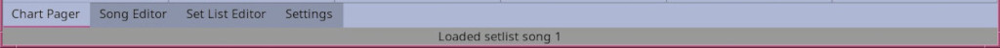

The Bottom bar
Previous Page || Main Page || Next Page

The bottom bar has two lines:
- The top line contains the tabs to navigate to the different pages as labeled.
- The bottom line will display various status messages.
Previous Page || Main Page || Next Page